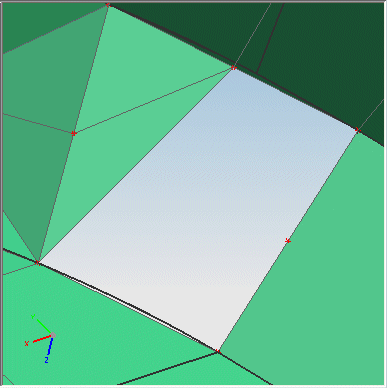

单元创建
使用单元创建  命令，可以通过选择已有节点在模型中手动创建单元。
命令，可以通过选择已有节点在模型中手动创建单元。
例如，可以使用单元创建创建几个独立的 1D 单元，将两个不同的片体或实体连接在一起。
要创建单元，您：
-
选择单元类型，它取决于求解器和分析类型
-
将单元分配到网格收集器中
-
选择节点以定义单元
您使用单元创建命令创建的单元并不与底层的几何体关联，如果几何体发生更新，软件不会自动更新手动创建的单元。
